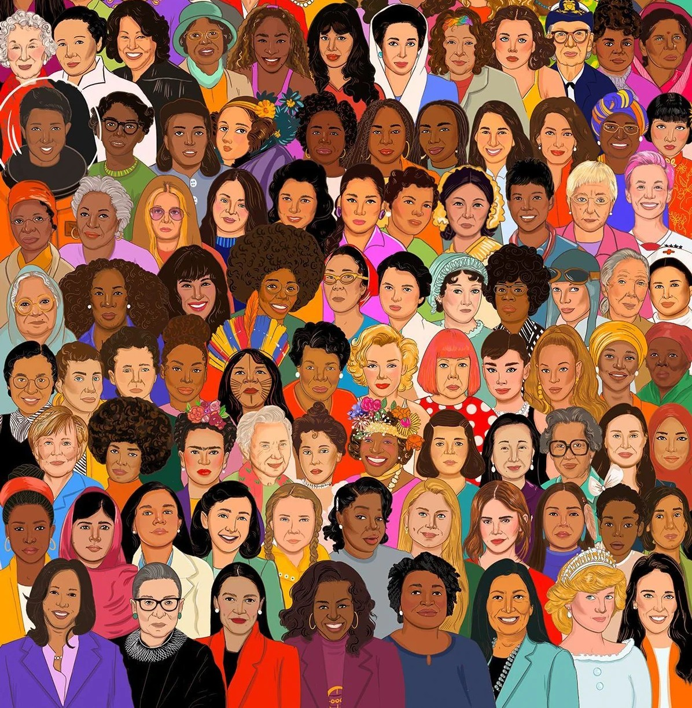

1. Which woman is often known as the ‘First Computer Programmer’?
2. Marie Curie is the only individual to win two Nobel Prizes in two different science categories. In which year did she win her first?
3. The scientist Rosalind Franklin is best known for her work on what topic?
4. What is the name of the first African-American woman to play at Wimbledon?
5. Sandra Day O’Connor was the first woman appointed to the US Senate. Who was the second?
6. Junko Tabei was the first woman to reach the summit of which mountain?
7. Who was the first American woman to travel to space?
8. Amelia Earhart was the first woman to fly solo across which ocean?
9. Which iconic woman is also known as ‘The Lady with the lamp’?
10. Emmeline Pankhurst was a founding member of which historical group?